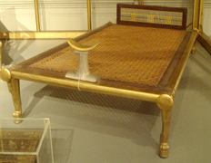
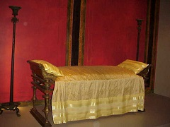
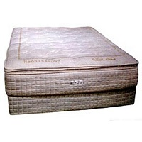
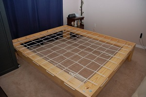
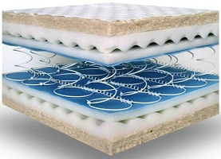
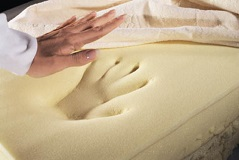

Year 10000 BC/BCE: These "beds" were not the same kind of beds we know of today. Instead of a soft place to lay it would usually be very rough. They would usually throw down some leaves inside a shallow chest of sorts so that they would be more comfortable then just lying on the ground.
Year 3000-ish BC/BCE: These beds were now made for the royal Pharohs. They were made out of wood and had cloth on the bed to provide comfort. In these times beds were a very special item to have, where as today they are basically in every home.
Year 27 BC - 393 AD: These beds usually were decorated with gold and other luxuries that they had. They improved the bed by making a "stuffing." They would do this by taking hay, cotton, or feathers. This would make it EVEN more comfortable for a user to fall asleep.
Year 1400-1600: During this time people created the matress. They would fill it with pea shucks and then cover it all in silk.
Year 1600-1700: In this period of time the mattresses were filled with straw and placed on top of lines of rope, suspending it in the air. This would allow the bed to be able to move with the motions of a person better, rather then just sitting on top of a hard surface.
Year 1800s: The mattresses in this time period would be made with cotton rather then straw. This provided more comfort. Also the first cast iron bed was made, along with the first spring mattress. These kinds of beds were made to produce a less attractive environment for bugs.
2000-Present. These beds use a certain foam that adjusts to its surrounding, I.E. A persons body. These are supposed to provide great comfort and help you stay asleep.
The earliest recorded use of the modern human device dates back to the civilizations of Mesopotamia around 7,000 BC. During this time, only the wealthy used pillows. The number of pillows symbolized status so the more pillows one owned the more affluence they held. Pillows have long been produced around the world in order to help solve the reoccurring problem of neck, back, and shoulder pain while sleeping. Besides for comfort, the pillow was also used for keeping bugs and insects out of people's hair, mouth, nose, and ears while sleeping. Pillow use has been associated with the mummies and tombs of ancient Egypt during the 11th dynasty, dating to 2055-1985 B.C. Ancient Egyptian pillows were wooden or stone headrests. These pillows were mostly used by placing them under the heads of the deceased because the head of a human was considered to be the essence of life and sacred.
The Romans and Greeks of ancient Europe mastered the creation of the softer type pillow. These pillows were stuffed with reeds, feathers, and straw in order to make them softer and more comfortable. Only upper-class people typically owned these softer pillows. However, all classes of people were allowed to use some type of pillow while sleeping, lying down or sitting in order to give them support. People in ancient Europe started to use pillows when going to church in order to kneel on while praying and to place holy books on. This is a tradition that still lives on today. In addition, the Romans and Greeks used their pillows by placing them under the head of those deceased just like the ancient Egyptians did.
Chinese pillows were traditionally solid, though sometimes used with a softer fabric over them. Over many Chinese dynasties, pillows were made from a wide range of materials including bamboo, jade, porcelain, wood, and bronze. Ceramic pillows became the most popular. The use of the ceramic pillow first appeared in the Sui dynasty between 581 and 618 while mass production appeared in the Tang dynasty between 618 and 907. The Chinese decorated their pillows by making them different shapes and by painting pictures of animals, humans, and plants on them. One common type of pottery used was Cizhou ware. Chinese ceramic pillows reached their peak in terms of production and use during the Song, Jin, and Yuan dynasties between the 10th and 14th century, but slowly phased out during the Ming and Qing dynasties between 1368 and 1911 with the emergence of better pillow making materials.
Pros: Widely available and easy to maintain + Breathable and absorbent
Cons: Quality and durability varies significantly based on type of cotton used + Costly if you want higher grades such as Egyptian or Pima cotton
Pros: Breathable and moisture-wicking + Natural and hypoallergenic
Cons: Higher price-point + Can have coarse feel when new
Pros: Soft and warm feel + Easy to care for and often reasonably priced
Cons: Not suitable for hot climates + Prone to surface pilling and damage over time
Pros: Inexpensive and easy to maintain + Wrinkle-resistant
Cons: Limited breathability and moisture-wicking properties + May be uncomfortably warm for some sleepers
Pros: Soft and breathable + Easy to maintain and long-lasting
Cons: Generally more expensive than cotton + Process to make material involves harsh chemicals
Pros: Ultra smooth feel and sleeps cool + Good option for people who have sensitive skin
Cons: Can be very expensive + Careful maintenance required to avoid fabric damage
Pros: Inexpensive and easy to clean and maintain + Warm and soft
Cons: Lacks cooling properties + Not natural or hypoallergenic
Pros: Durable and shrink-resistant + Smooth, soft, and sleeps cool
Cons: Costly + Limited insulation